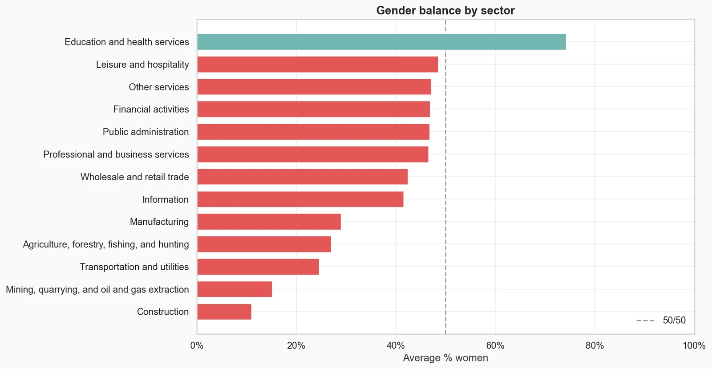
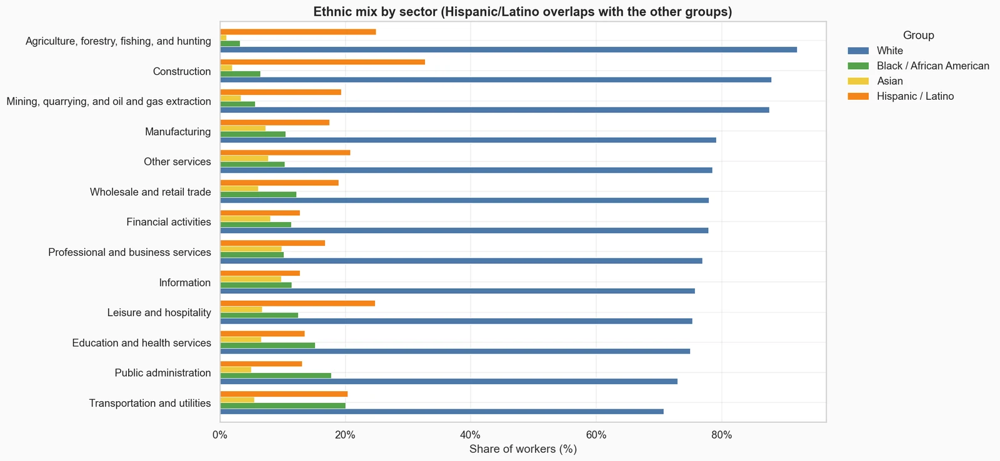
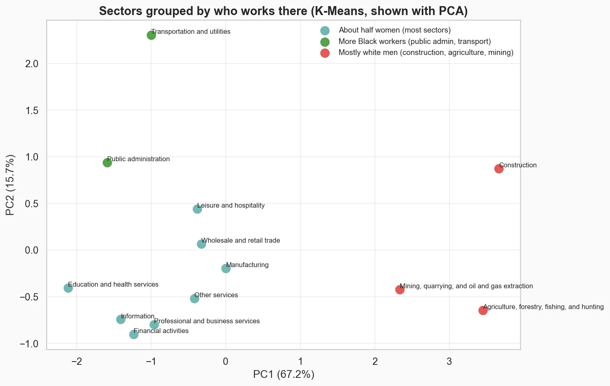
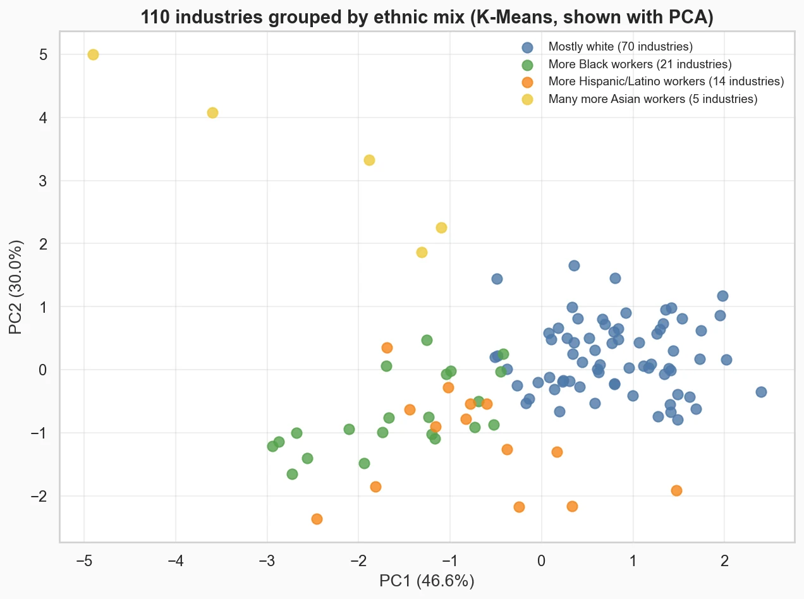
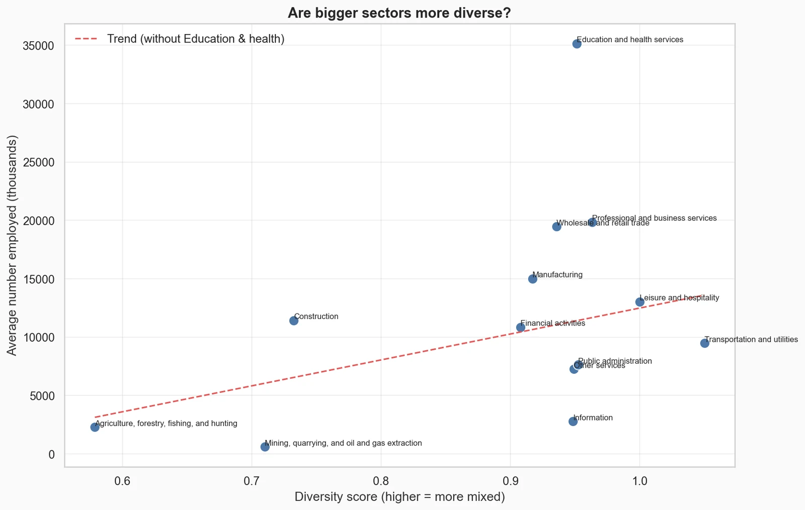

Work/PRJ-11/Segmentation · US workforce
Workforce diversity: which US industries are the least diverse?
Construction, agriculture and mining. They are 88–92% white, and construction is 89% men. White workers are the majority in every sector (71–92%).
- Data
- US labour force statistics by sector and industry, 2020–2023
- Coverage
- 13 sectors, 110 industries
- Tools
- Python, pandas, scikit-learn, seaborn
- Code
- github.com/BoredMongoose/strata-clustering ↗
Business question
Which US industries most need diversity hiring?
Recommendation
Start diversity hiring in construction, agriculture and mining, and focus on hiring women in construction, mining and transportation. Track the same numbers every year: mining's Hispanic/Latino share rose 5 points in two years, so they can move.
Estimated impact89%
Of construction workers are men, the most male-dominated sector (mining is 85%).
01Results
Construction is 89% men; education and health is 75% women.





02How I did it
From raw data to a decision.
- Cleaned the data: removed blank and total rows, fixed percentages typed as whole numbers (87.5 instead of 0.875), and dropped one impossible value.
- Answered six questions with pandas groupby: gender balance, ethnic mix, change from 2021 to 2023, and size against diversity.
- Grouped sectors and industries with K-Means after standardising the columns, picked the number of groups with the elbow method, and drew them with PCA.
- Scored diversity with Shannon entropy: higher means workers are spread more evenly across the groups.
03What could make this wrong
The limits, said out loud.
- 01Only four years of data.
- 02The percentages are survey estimates, so small industries jump around from year to year.
- 03K-Means always finds groups, even weak ones: the groups describe the data, they don't prove anything.
04What I learned
- 01Clean first: some percentages were typed as 87.5 instead of 0.875, and one Asian share was above 100%.
- 02Standardise the columns before K-Means, otherwise the biggest numbers decide the groups.
- 03Check written findings against the output: my first write-up had the industry groups mixed up.
05What I'd do next
- 01Add pay data, to see whether the least diverse industries also pay differently.
- 02Use more years, to tell real changes from survey noise.
- 03Look at job level (entry level vs management), not just the industry.